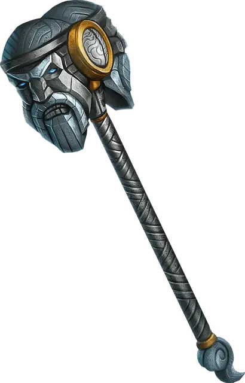

Молот грома
Hammer of Thunderbolts
Оружие (Боевой молот или Молот), легендарное (требуется настройка)

Рекомендованная стоимость 200 000 ЗМ
Вы получаете бонус +1 к броскам атаки и урона, совершаемым c использованием этого магического оружия.
У этого оружия есть 5 зарядов. Вы можете потратить 1 заряд, чтобы совершить дальнобойную атаку этим оружием, метая его, как если бы у него было свойство Метательное с нормальной дистанцией 20 футов и максимальной дистанцией 60 футов. Если эта атака попадает, от оружия исходит удар грома, слышимый на расстоянии 300 футов. Цель и каждое существо в пределах 30 футов от неё, за исключением вас, должны совершить спасбросок Телосложения Сл 17, при провале получая состояние Ошеломлённый до конца вашего следующего хода. Немедленно после попадания или промаха оружие возвращается в вашу руку. Оружие восстанавливает 1к4 + 1 потраченных зарядов на каждом рассвете.
Гроза великанов. Пока вы настроены на это оружие, носите Пояс силы великана или Рукавицы силы огра, и настроены на этот предмет, вы получаете следующие преимущества:
Гроза великанов. Когда вы выбрасываете 20 на к20 броска атаки с этим оружием по Великану, цель должна преуспеть в спасброске Телосложения Сл 17, иначе погибнет.
Мощь великанов. Значение, на которое изменяется ваша Сила Поясом силы великана или Рукавицами силы огра, увеличивается на 4, но не более 30.